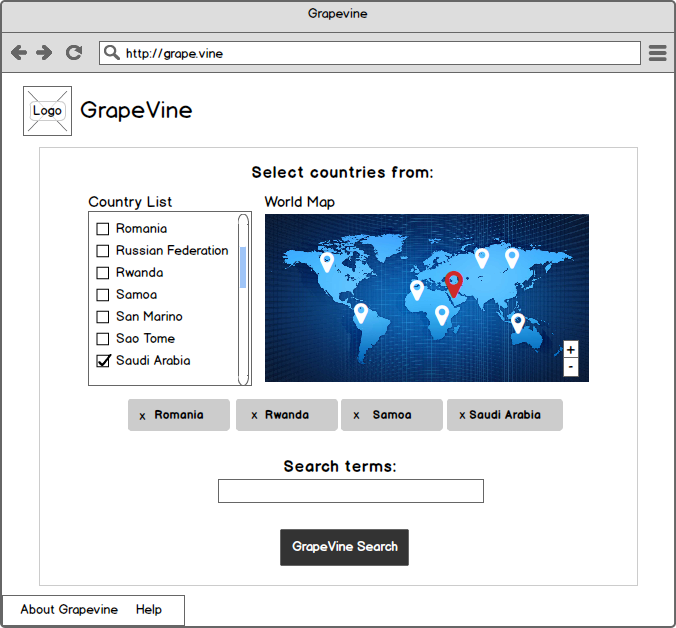
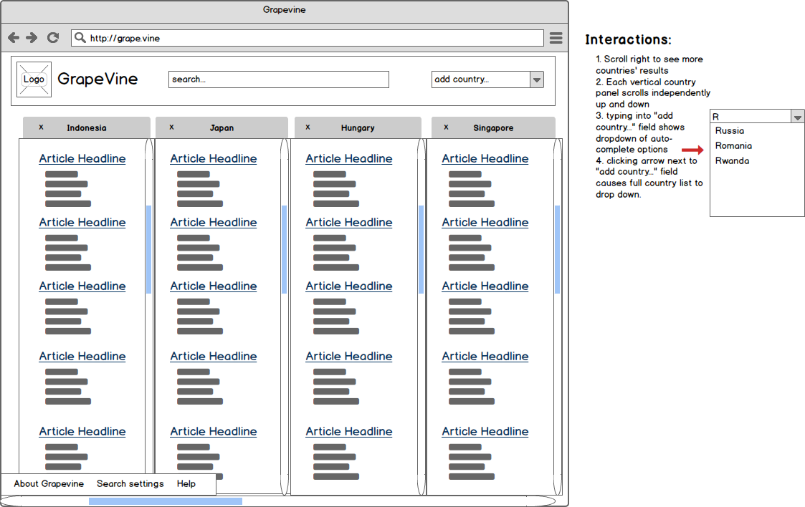
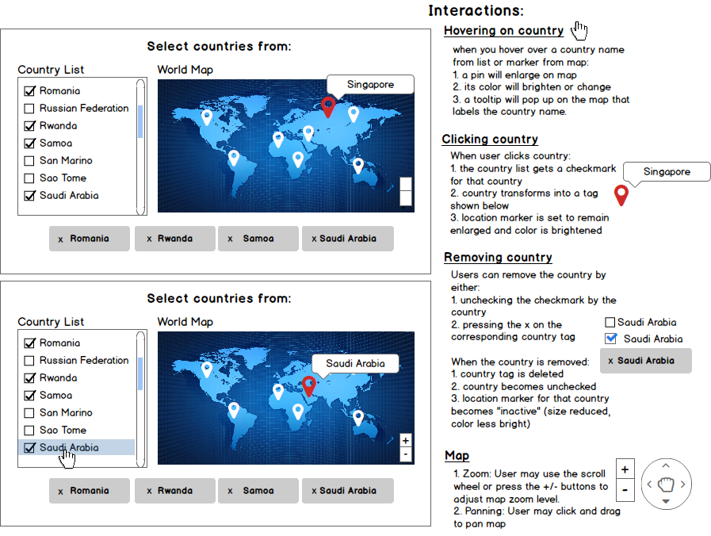

<div class="portfolio-modal modal fade" id="portfolioModal4" tabindex="-1" role="dialog" aria-hidden="true">
    <div class="modal-content">
        <div class="container">
            <div class="row">
                <div style="text-align: right;">
                    <button type="button" class="btn btn-default" data-dismiss="modal"><i data-dismiss="modal" class="fa fa-times fa-2x"></i></button>
                </div>
                <div class="col-lg-12">
                    <div class="modal-body">
                        <div class="row">
                            <h2>GrapeVine</h2>
                        </div>
                        
                        <div class="row">
                            <div class="col-xs-12 proj-desc spacer">
                                <h5>Project Overview:</h5>
                                <p>GrapeVine began as a hackathon project at Hack UCSC that I have continued to work on with two other people. It is a web application that allows you to simulate searches from other countries, in other languages, through the Tor network. I built the front-end using Python, Flask, and Jinja. We have a functional prototype, but are still working on porting the original Python code to NodeJS and giving it a real UI design.</p>
                            </div>
                        </div>
                        <div class="row proj-desc">
                            <div class="col-xs-12 col-md-6">
                                <h5>Search Page Wireframe</h5>
                                
                            </div>
                            <div class="col-xs-12 col-md-6 spacer">
                                <h5>Inspiration:</h5>
                                <p>I thought of the idea when I was in Indonesia reading the newspaper and noticed that many of the articles told very different stories from what I had read in the American news. Driven by curiosity, I decided to do more research on other news sources from around the world, using google translate to navigate parts of the web that were not in my own native language. I thought my findings were interesting, but tedious to come up with manually. That's why I decided to create GrapeVine.</p>
                            </div>
                            <div class="col-xs-12 col-md-6 spacer">
                                <h5>How it Works:</h5>
                                <p>Enter in your search query select which countries to search from. GrapeVine then takes your query and uses Google's API to translate it into the native language of the countries you selected. Using Tor, it then runs the translated search from within the countries of interest. Once the results come back, GrapeVine translates those results back into your own language and displays the various countries' results in columns for comparison</p>
                            </div>
                        </div>
                        <div class="row proj-desc">
                            <div class="col-xs-12">
                                <h5>Results Page Wireframe</h5>
                                
                            </div>
                            <div class="col-xs-12">
                                <h5>Interactions Wireframe</h5>
                                
                            </div>
                        </div>
                        <ul class="list-inline item-details">
                            <li>Date:
                                <strong>February 2015
                                        </strong>
                            </li>
                            <li>Service:
                                <strong>UX, User Flow, Wireframing, Front-end Development
                                        </strong>
                            </li>
                        </ul>
                        <div class="col-xs-12 text-center">
                            <button type="button" class="btn btn-default" data-dismiss="modal"><i class="fa fa-times"></i> Close</button>
                        </div>
                    </div>
                </div>
            </div>
        </div>
    </div>
</div>
</div>
